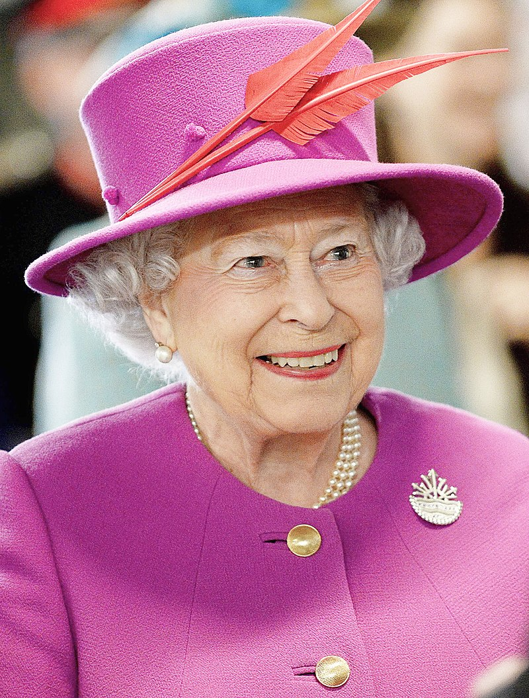
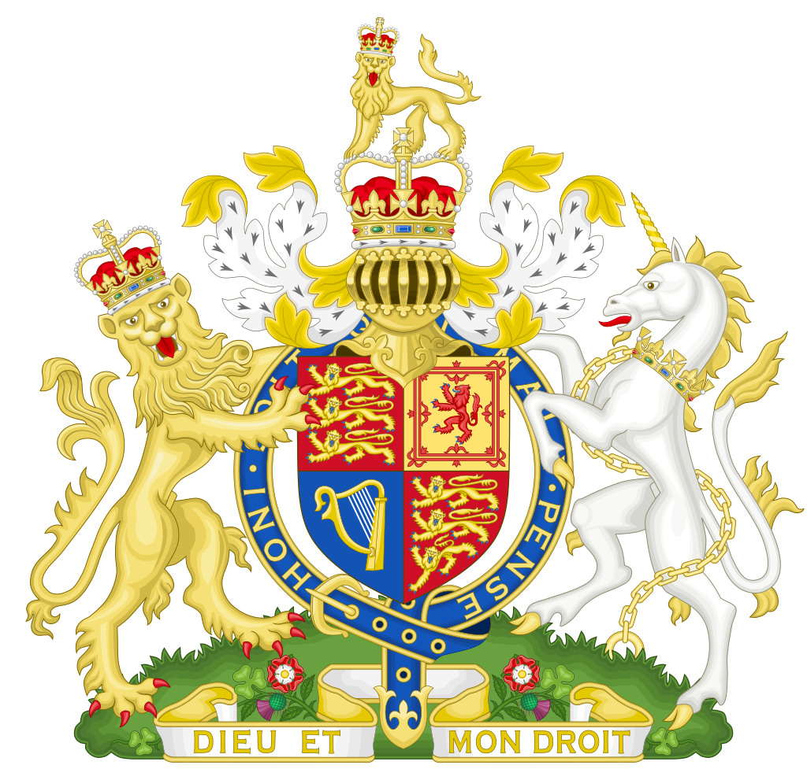

|
|||
| Є рекордсменом серед всіх британських монархів за віком і тривалості перебування на престолі. |  |
Королівський герб:  |
|
|
Чинний монарх в п'ятнадцяти незалежних державах: Австралії, Антигуа і Барбуда, Багамські Островах, Барбадосі, Белізі, Гренаді, Канаді, Новій Зеландії, Папуа - Нової Гвінеї, Сент-Вінсент і Гренадіни, Сент-Кітс і Невіс, Сент-Люсії, Соломонових Островах , Тувалу, Ямайці. | |||
| День народження 21 квітня 1926. Зійшла на престол 6 лютого 1952 року. | |||
|
|||